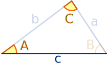
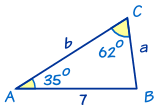
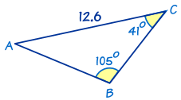

Solving AAS Triangles
"AAS" means "Angle, Angle, Side"
|  |
"AAS" is when we know two angles and one side (which is not between the angles). |
|
To solve an AAS triangle
|
Example 1

In this triangle we know:
- angle A = 35°
- angle C = 62°
- and side c = 7
It's easy to find angle B by using 'angles of a triangle add to 180°':
B = 180° − 35° − 62° = 83°
We can also find side a by using The Law of Sines:
a/sin A = c/sin C
a/sin(35°) = 7/sin(62°)
a = (7 × sin(35°))/sin(62°)
a = 4.55 to 2 decimal places
Also we can find b by using The Law of Sines:
b/sin B = c/sin C
b/sin(83°) = 7/sin(62°)
b = (7 × sin(83°))/sin(62°)
b = 7.87 to 2 decimal places
Now we have completely solved the triangle!
Did you notice that we used b/sin B = c/sin C rather than b/sin B = a/sin A for the last calculation?
There's a good reason for that. What if we made a mistake when finding a? Then our answer for b would also be wrong!
As a rule, it is always better to use the sides and angles that are given rather than ones we've just worked out.
Example 2

This is also an AAS triangle.
First find angle A by using 'angles of a triangle add to 180°':
Now find side c by using The Law of Sines:
Similarly we can find side a by using The Law of Sines and using the given side b = 12.6 rather than c that we just worked out:
Done!